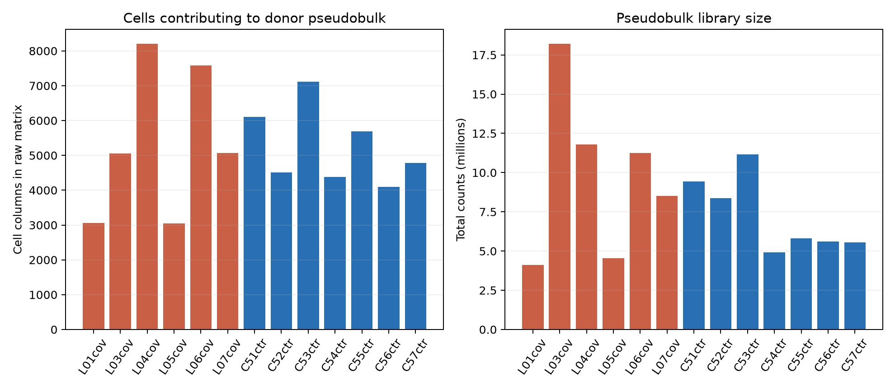
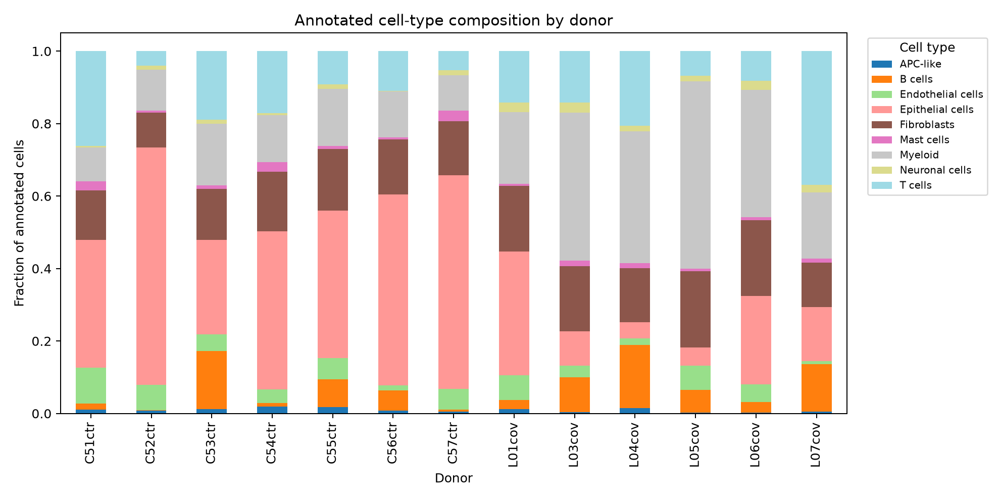
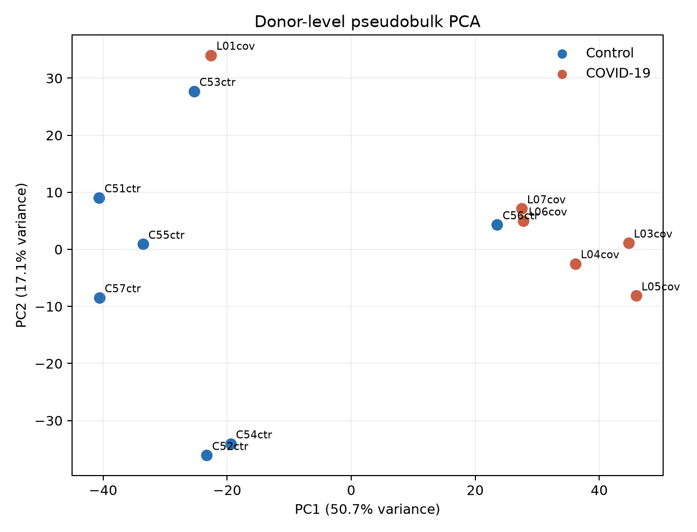
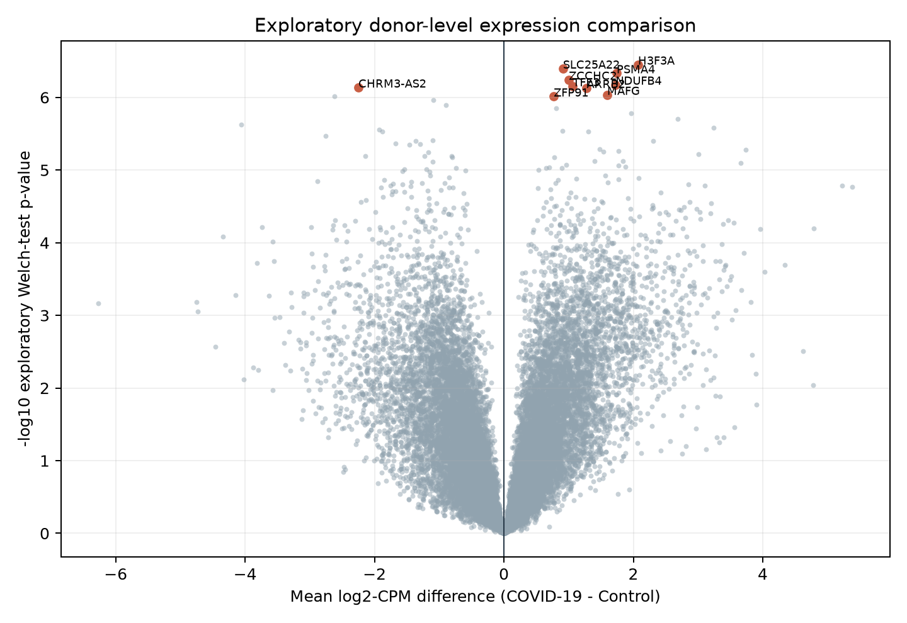
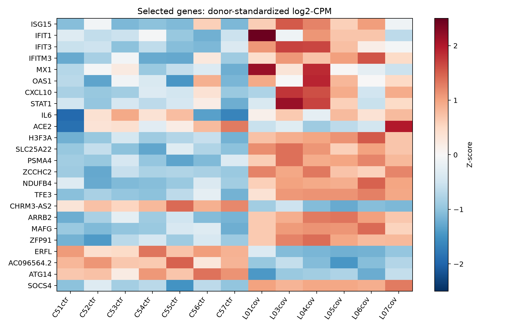

A reproducible CohortLint case study using public human-lung single-nucleus RNA-seq data.
Data: 13 donors (7 control, 6 COVID-19); 68,710 cell columns summarized; public source NCBI GEO GSE171524.
The selected donors were divided into deterministic, condition-balanced discovery and validation folds solely to exercise the multi-table workflow. These are not cohorts claimed by the source study. With the case-study missingness threshold set to 10%, CohortLint flagged the missing age value for L04cov and generated a reviewable report.
Open the standalone CohortLint report





| Gene | log2-CPM difference | p-value | BH FDR |
|---|---|---|---|
| H3F3A | 2.072 | 3.532e-07 | 0.001924 |
| SLC25A22 | 0.9131 | 4.012e-07 | 0.001924 |
| PSMA4 | 1.741 | 4.649e-07 | 0.001924 |
| ZCCHC2 | 1.004 | 5.716e-07 | 0.001924 |
| NDUFB4 | 1.726 | 6.684e-07 | 0.001924 |
| TFE3 | 1.064 | 7.031e-07 | 0.001924 |
| CHRM3-AS2 | -2.248 | 7.316e-07 | 0.001924 |
| ARRB2 | 1.279 | 7.405e-07 | 0.001924 |
| MAFG | 1.596 | 9.222e-07 | 0.001924 |
| ZFP91 | 0.7702 | 9.727e-07 | 0.001924 |
| ERFL | -2.622 | 9.732e-07 | 0.001924 |
| AC096564.2 | -1.094 | 1.095e-06 | 0.001983 |
The complete source code, machine-readable outputs, data provenance, and limitations are versioned with CohortLint. Raw public matrices are downloaded from NCBI and are not redistributed.
Source publication: Melms JC et al., A molecular single-cell lung atlas of lethal COVID-19, Nature (2021), doi:10.1038/s41586-021-03569-1.